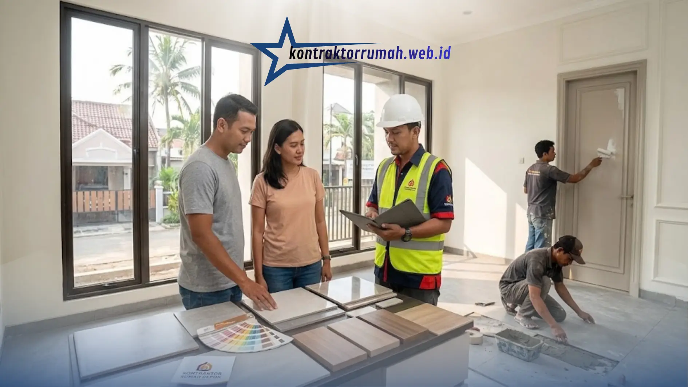

Membangun rumah adalah keputusan finansial besar. Salah memilih pelaksana bisa berujung pada biaya membengkak, jadwal molor, atau kualitas bangunan yang mengecewakan. Karena itu, banyak pemilik lahan di Depok, dari kawasan Margonda, Cinere, Sawangan, hingga Cimanggis, memilih menyerahkan pekerjaan kepada kontraktor profesional.
Artikel ini membahas apa saja yang perlu Anda ketahui sebelum memilih kontraktor rumah Depok: manfaatnya, sistem kerjanya, perkiraan biaya, urusan izin, sampai daftar periksa kontrak.
Poin Penting
- Borongan penuh (bahan + upah) membuat biaya dan jadwal terikat kontrak, berbeda dengan tukang harian yang sulit dikontrol.
- Minta RAB rinci agar penawaran antar kontraktor bisa dibandingkan secara adil dan biaya siluman terhindar.
- Perkiraan biaya Depok: sekitar Rp3,5–4,5 juta/m² (ekonomis), Rp4,5–6 juta/m² (menengah), dan di atas Rp6 juta/m² (premium).
- Pastikan urusan PBG jelas: termasuk paket atau biaya terpisah, karena rumah tinggal wajib memilikinya.
- Kunci dengan kontrak bermaterai, termin berbasis progres, dan masa retensi 90–180 hari.
Apa Bedanya Kontraktor dengan Tukang Harian?
Sebelum memutuskan, pahami dulu tiga pola pembangunan yang umum:
| Sistem | Siapa yang menanggung | Kelebihan | Risiko |
|---|---|---|---|
| Tukang harian | Pemilik mengurus material, desain, dan pengawasan sendiri | Terlihat murah di awal | Sulit mengontrol biaya, tukang tidak konsisten, tidak ada pihak yang bertanggung jawab jika terjadi kesalahan |
| Borongan tenaga | Pemilik membeli material, kontraktor menyediakan tenaga kerja | Biaya upah pasti | Pemilik tetap harus mengawasi kebutuhan material |
| Borongan penuh (bahan + upah) | Kontraktor mengurus semuanya | Praktis, biaya dan jadwal terikat kontrak | Perlu memilih kontraktor yang benar-benar terpercaya |
Sistem borongan penuh inilah yang sering disebut layanan satu pintu: desain, izin, pembangunan, hingga serah terima ditangani satu tim.
Manfaat Menggunakan Jasa Kontraktor
- Anggaran terukur lewat RAB. Rencana Anggaran Biaya (RAB) adalah daftar rinci volume pekerjaan, harga satuan, dan total biaya. Dengan RAB, Anda bisa membandingkan penawaran antar kontraktor secara adil dan menghindari biaya siluman.
- Standar struktur yang jelas. Pekerjaan pondasi, sloof, kolom, dan balok mengikuti gambar kerja dan diawasi tenaga teknis. Ini penting karena Depok berada di wilayah dengan tanah yang bervariasi, dari tanah keras hingga tanah lunak di dekat area sungai, sehingga jenis pondasi perlu disesuaikan.
- Jadwal terikat kontrak. Target selesai dan sanksi keterlambatan dapat dituliskan dalam perjanjian.
- Masa pemeliharaan (retensi). Setelah serah terima, biasanya ada masa 90 sampai 180 hari di mana kontraktor wajib memperbaiki cacat pekerjaan, seperti retak rambut atau kebocoran, tanpa biaya tambahan.
Tahapan Pembangunan Rumah dengan Kontraktor
- Konsultasi dan survei lokasi. Mendiskusikan kebutuhan ruang, budget, dan kondisi lahan (luas, kontur, akses material, lebar jalan).
- Desain 2D dan 3D. Denah, tampak, dan visualisasi agar Anda bisa merevisi sebelum pembangunan dimulai.
- Penyusunan RAB dan kontrak. Spesifikasi material, jadwal, dan termin pembayaran disepakati tertulis.
- Pengurusan perizinan. Rumah tinggal wajib memiliki PBG (Persetujuan Bangunan Gedung), pengganti IMB, dan diproses melalui sistem SIMBG. Tanyakan apakah pengurusan izin termasuk dalam paket atau biaya terpisah.
- Pelaksanaan konstruksi. Dimulai dari pekerjaan tanah dan pondasi, struktur, dinding, atap, hingga finishing, dengan laporan kemajuan berkala.
- Serah terima dan masa pemeliharaan. Pemeriksaan bersama (punch list), perbaikan temuan, lalu penyerahan kunci.
Berapa Biaya Bangun Rumah di Depok?
Biaya sangat dipengaruhi spesifikasi material, jumlah lantai, dan kompleksitas desain. Sebagai gambaran umum (bukan penawaran, dan harga material selalu berubah):
| Kelas spesifikasi | Perkiraan biaya per m² |
|---|---|
| Standar / ekonomis | Sekitar Rp3,5 – 4,5 juta |
| Menengah | Sekitar Rp4,5 – 6 juta |
| Premium / mewah | Di atas Rp6 juta |
Sebagai contoh, rumah dua lantai dengan luas bangunan total 120 m² pada kelas menengah dapat berada di kisaran Rp540 juta hingga Rp720 juta. Angka pasti hanya bisa dipastikan setelah ada gambar kerja dan RAB.

Pilihan material dan spesifikasi yang dicantumkan rinci di RAB sangat memengaruhi biaya bangun rumah.
Faktor yang paling memengaruhi biaya:
- Jenis pondasi dan kondisi tanah
- Pilihan material (bata ringan vs bata merah, rangka atap baja ringan vs kayu, jenis keramik)
- Jumlah lantai dan bentang struktur
- Kerumitan desain (banyak sudut, void, kanopi besar)
- Akses lokasi, karena gang sempit menambah biaya angkut
Tips: Minta kontraktor menuliskan merek dan tipe material di RAB, bukan hanya “keramik” atau “cat”. Ini mencegah penggantian material ke kualitas lebih rendah di tengah proyek.
Checklist Memilih Kontraktor Rumah di Depok
- Portofolio proyek nyata. Minta daftar proyek di Depok dan sekitarnya, lalu kunjungi satu atau dua lokasi bila memungkinkan.
- Legalitas usaha. Badan usaha resmi (PT/CV) dengan NIB, NPWP, dan idealnya memiliki sertifikat badan usaha (SBU) sesuai kualifikasi.
- Tenaga teknis. Tanyakan siapa penanggung jawab lapangan dan apakah ada tenaga ahli yang mengawasi struktur.
- RAB rinci. Waspadai penawaran yang hanya berupa satu angka tanpa rincian.
- Kontrak tertulis bermaterai yang mencakup ruang lingkup, spesifikasi, jadwal, termin pembayaran, denda keterlambatan, dan masa retensi.
- Termin pembayaran berbasis progres. Hindari uang muka yang terlalu besar; bayar sesuai tahap pekerjaan yang sudah selesai.
- Ulasan klien sebelumnya. Cari testimoni yang dapat diverifikasi, misalnya di Google Maps.
- Transparansi komunikasi. Apakah ada laporan progres mingguan dan foto dokumentasi?
FAQ Seputar Kontraktor Rumah Depok
Memilih kontraktor rumah Depok yang tepat berarti menimbang legalitas, RAB yang rinci, kontrak yang jelas, dan rekam jejak proyek, bukan sekadar mencari harga termurah.
Jika Anda butuh pendamping tepercaya, tim jasa kontraktor rumah Kontraktor Rumah siap membantu dari desain, RAB, hingga serah terima.